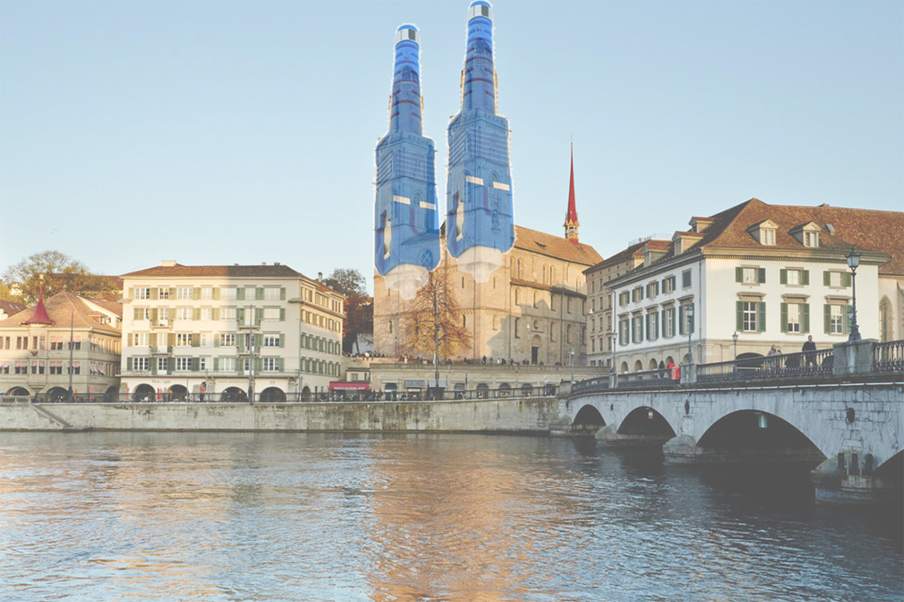

Presentations
Laurent Vanbever

Hand-made collage using pictures of the Grossmünster in downtown Zürich and
Given the time I spent preparing talks—which is time well-invested if you ask me—I have always been frustrated by the little visibility they get. This page is my attempt to correct that. It showcases (almost) all the presentations and talks I have given over the years since 2008, in reverse chronological order.
Besides learning about my research, browsing through this list is a good way to see how my presentation style has evolved over the years. (Hopefully for the better, but I'll let you be the judge of that.)
For each talk, you'll find a description of its context along with links to both an online (and relatively mobile-friendly, at least in landscape mode) slideshow and the PDF. Links to recordings are also included, whenever available. The online slideshow is made using reveal.js. Use arrow keys to navigate, Space for next slide, F for fullscreen, O or Esc for overview, and ? for the complete list of keyboard shortcuts. In case you wonder, I use Keynote for designing my slides and rely on a grid-based design.
A couple of highlights:
- My latest keynote talk which surveys our recent works on network verification;
- My tenure talk which surveys my research at ETH between 2015 and 2020;
- The presentation I gave to get my ERC Starting Grant;
- The job talk I gave at ETH when applying to become a professor;
- The presentation I gave for my PhD defense, in 2012 (gasp);
- The first talk I ever gave at a conference (technically, it was a workshop). Clearly not the greatest, but we all start somewhere.
Disclaimer: This page is a work in progress: not all the talks are there (yet), so please come back. Some talks overlap in topics and/or content. To avoid useless redundancies though, I only included one copy of each talk even though I might have given it at various venues. (If you are interested in a more exhaustive list of the talks I have given over the years, feel free to check out my curriculum vitae.)
For questions or complaints, feel free to reach me at lvanbever@ethz.ch.